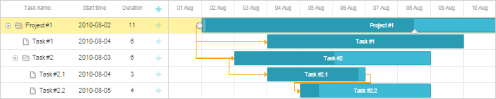

The final step is to create a view for the gantt. As with the two previous components, we'll use a standard code for initializing the component.
When you complete the step, run webhost/cakephp_dhtmlx/gantt, and the app will produce the gantt presented in the picture below. It will be able to load data from the server and save them back.

To learn more about dhtmlxGantt initialization, read the articles:
"Template/Gantt/gantt.ctp" file
<!DOCTYPE html>
<head>
<script src="lib/dhtmlxGantt/codebase/dhtmlxgantt.js"></script>
<link rel="stylesheet" href="lib/dhtmlxGantt/codebase/dhtmlxgantt.css">
</head>
<body>
<div id="gantt_here" style='width:100%; height:250px;'></div>
<script type="text/javascript"> gantt.init("gantt_here", new Date(2010,7,1), new Date(2010,8,1));
// refers to the 'gantt_data' action
gantt.load("./gantt_data", "xml");
// refers to the 'gantt_data' action as well
var dp = new dataProcessor("./gantt_data");
dp.init(gantt);
</script>
</body>